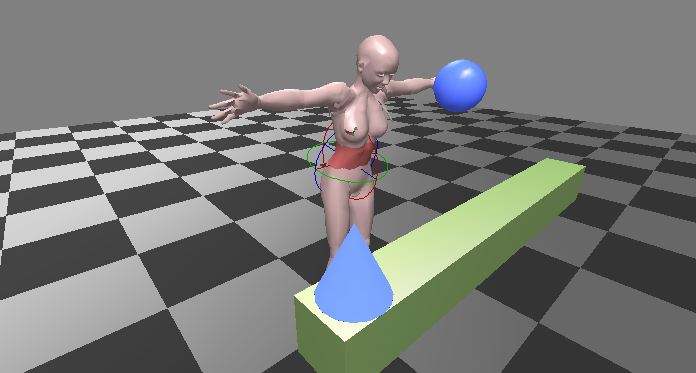

QAvimator is a 3D animation editor, mainly developed to create animations for the 3D virtual world Second Life.
With QAvimator you can create animations that can be uploaded to the Second Life world and being used there in various ways. It was designed to be easy to use but at the same time offer the artist a tool to create decent animations without having to buy or learn a more complex program.
